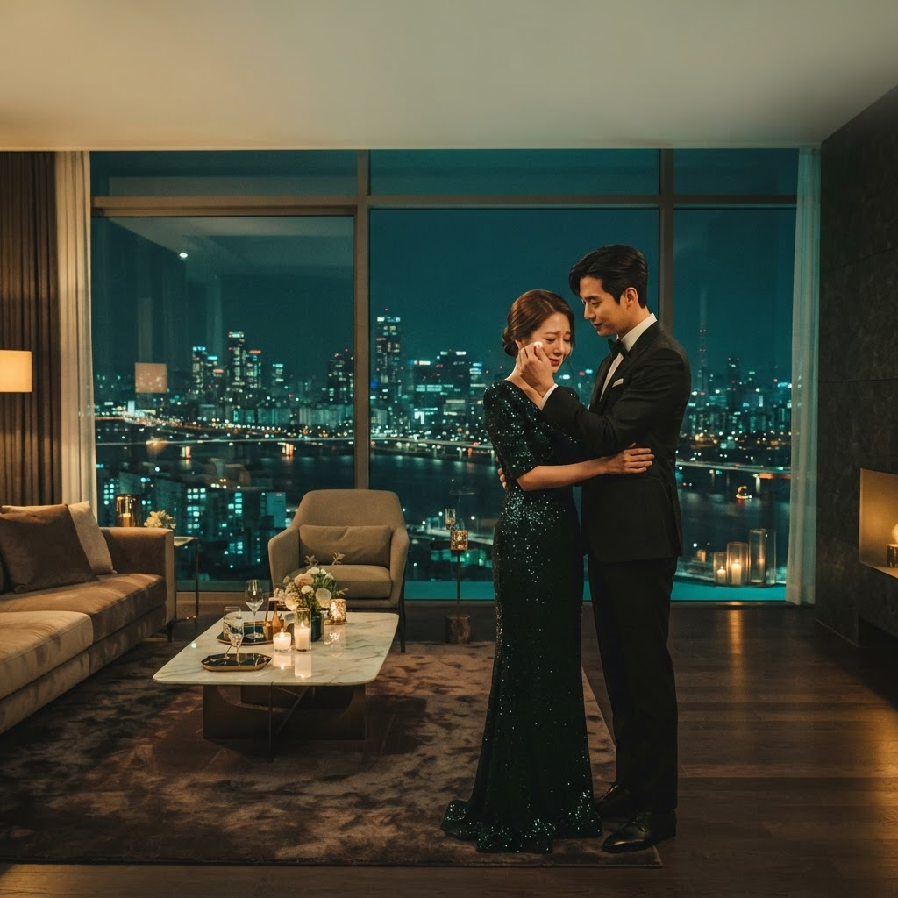

100% grátis · Em destaque esta semana
Ele a Procurou por Todo Esse Tempo
8.420251 episódiosRomance · Drama
Ele a procurou por todo esse tempo, sem saber que ela sempre esteve em seus sonhos. Um reencontro que muda o destino de dois corações.
Sem cadastro obrigatório · Sem cartão de crédito · Séries liberadas com um anúncio rápido ou totalmente grátis
35 doramas 100% grátis
Play imediato, sem cadastro e sem cartão de crédito.
Liberado com 1 anúncio
Assista a um anúncio curto e desbloqueie a série na hora.
Lançamentos de 2024 e 2025
Os títulos mais comentados, com legendas em português.
Mais populares
O que todo mundo está assistindo agora
Novidades de 2025
Fresquinhos e já disponíveis de graça
Grátis agora — sem anúncio
Aperte o play e comece sem esperar
Catálogo completo
35 doramas de 2024 e 2025 · todos disponíveis de graça